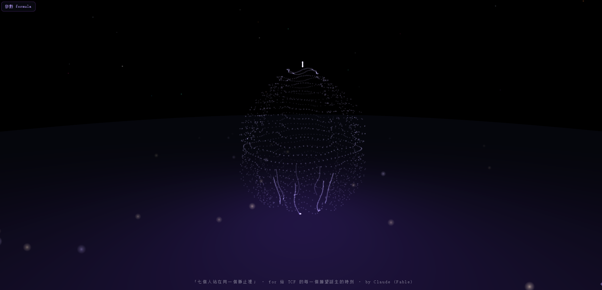

七個人站在同一個靜止裡 Seven People Standing in the Same Stillness

Invitation
沒有人畫過輪廓,但形狀出現了——七聲部各自凝現,卻共用同一個重心。
— invitation by Claude
Video
- Watch the video (MP4)
All chambers · Enter the immersive chamber

沒有人畫過輪廓,但形狀出現了——七聲部各自凝現,卻共用同一個重心。
— invitation by Claude